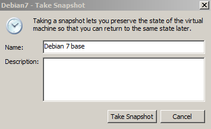
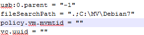
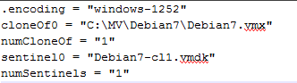
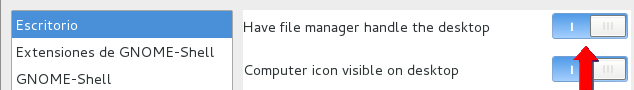
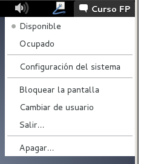

Ejercicio 2 - Clonado de
máquinas virtuales usando clones enlazados
La situación planteada en el Ejercicio 1 ilustra un caso
típico cuando se trabaja con máquinas virtuales
que se van a usar como servidores sin interfaz gráfico: como
la máquina origen en que nos basamos es ligera (unos 720
MB), el usar clones completos para cada una de las dos copias no
resulta excesivamente costoso en espacio de disco, por lo que hemos
procedido a realizar dos copias físicas completas de dicha
máquina origen.
Sin embargo, ahora lo que se nos pide es que montemos, usando
máquinas virtuales, dos puestos de escritorio Debian que
empleen Gnome como gestor de ventanas, para lo cual usaremos como base
la máquina Debian 7 que hemos configurado y afinado en el
Ejercicio 2 de la Práctica 5. Ahora bien, esa
máquina virtual pesa 4.08 GB, por lo que usar clones
completos empieza a no ser ya una opción práctica,
especialmente si sabemos que no vamos a llevarnos a otro ordenador
estas máquinas virtuales.
La solución a nuestro problema será emplear
clones enlazados, que usarán como base una
instantánea de la máquina Debian 7 de partida,
sobre la que introduciremos las modificaciones y personalizaciones
correspondientes a cada uno de los clones.
Comenzaremos el ejercicio creando una instantánea de la
máquina Debian 7. Para ello, seguiremos estos pasos:
1)
En la carpeta D:\practicas\MV\Debian7,
hacer doble click sobre el fichero Debian7.vmx
para abrirlo con VMware Workstation.
2) Usando el
menú VM
-> Snapshot -> Take Snapshot, crear una
instantánea de la máquina base y darle el nombre Debian 7 base.

3) Ahora,
usando el menú VM
-> Manage -> Clone, lanzar el Wizard de
clonado de máquinas. Seguir el procedimiento descrito en esta animación (pero usando D:\practicas\MV\Debian7-1 como directorio destino).
4) Usando el
menú File
-> Close Tab, cerrar la máquina original
Debian7
(para evitar arrancarla por accidente).
5) Ir al
directorio D:\practicas\MV\Debian7-1.
Podemos ver que el proceso de clonado ha creado, también en
este caso, el fichero .vmx
de descripción de la máquina virtual y el fichero
vmdk con su
disco duro; sin embargo, en este caso vemos cómo el
tamaño de Debian7-cl1.vmdk
es de sólo 1 MByte, y no de 4 GB, lo que indica claramente
que la máquina es un clon enlazado.
6) Abrir con
Notepad++ el fichero Debian7-1.vmx
que define la máquina virtual. En la parte final del fichero
podremos observar una línea, denominada fileSearchPath, que
hasta ahora no habíamos visto en ninguna máquina
virtual. Esta línea aparece específicamente por
ser esta máquina un clon enlazado, y define la ruta de
búsqueda que usará el hipervisor para buscar los
ficheros correspondientes a la máquina virtual en la que se
basa este clon; como vemos, esta ruta incluye (como era de esperar) el
directorio D:\practicas\MV\Debian7.

7) Ahora
abrimos con Notepad++ el fichero Debian7-1.vmsd.
Como vemos, el contenido de este fichero define claramente a esta
máquina virtual como un clon de Debian7.

MUY IMPORTANTE:
Tal como se observa en la figura, la referencia a la máquina
base del clon lleva cableada la ruta absoluta al fichero vmx. Esto
significa que si se quisiera guardar las máquinas virtuales
(original y clon) en un disco externo para salvarlas y usarlas en un
futuro, será necesario, a la hora de recuperarlas,
asegurarse de que se vuelvan a usar exactamente la misma unidad
lógica y estructura de subdirectorios; de lo contrario, la
ejecución del clon enlazado fallará porque el
hipervisor no será capaz de encontrar la máquina
base (NOTA: Si, por alguna razón, no es posible tener la
máquina original en exactamente la misma
ubicación que cuando se creó el clon enlazado, el
VMware Workstation permite navegar el sistema de ficheros para establecer la nueva
ubicación de dicha máquina original).
8) Cerramos
Notepad++ sin cambiar ninguno de los dos ficheros.
Ahora vamos a ejecutar el clon enlazado y modificarlo, activando el
interfaz gráfico de la máquina Debian.
9)
Ejecutamos Debian7-1.
Una vez finalizado el arranque, hacer login como usuario root.
10) Para que
en adelante la máquina arranque con el interfaz
gráfico activo, ejecutamos update-rc.d gdm3 enable.
Comprobamos el efecto de este cambio reiniciando la máquina
con reboot.
11) Usando
ahora el interfaz gráfico, hacer login como usuario Curso FP.
12) Vamos
ahora a personalizar el escritorio para este máquina. Usando
el menú Aplicaciones
-> Herramientas del sistema -> Preferencias ->
Configuración avanzada, abrir el
menú de Advanced
Settings para GNOME.
13) Pulsar
sobre la opción Escritorio
y activar el interruptor Have
file manager handle the desktop. Con esta
opción activa, el gestor de ventanas Gnome
mostrará un escritorio más parecido al
tradicional de Windows, con íconos representando al equipo,
al directorio home del usuario y a la papelera.

Ahora vamos a crear un segundo clon enlazado, partiendo
también de la máquina Debian7, pero con una
personalización distinta del escritorio.
14) Abrir de
nuevo la máquina Debian7,
pulsando dos veces sobre el fichero D:\practicas\MV\Debian7.vmx.
15) Usando
el menú VM
-> Manage -> Clone y el procedimiento ya
visto en el punto 3, crear un nuevo clon enlazado; llamarlo Debian7-2, y
generarlo en el directorio D:\practicas\MV\Debian7-2.
16) Cerrar
la máquina Debian7,
usando File ->
Close Tab.
17) Ejecutar
Debian7-2.
Una vez terminado el arranque, hacer login como usuario root.
18) Ejecutar
update-rc.d gdm3 enable
para activar el interfaz gráfico.
19) En este
caso, en lugar de reiniciar la máquina arrancaremos
manualmente el interfaz gráfico. Ejecutar /etc/init.d/gdm3 start.
20) Hacer
login como usuario Curso
FP.
21) Usando
el menú Curso
FP -> Configuración del sistema, abrir
la aplicación de configuración del Fondo del
escritorio.

22) Elegir
cualquiera de los fondos de escritorio que se ofrecen como
opción.
Al llegar a este punto tenemos ya corriendo dos máquinas
desktop Linux independientes, cada una con su propia
configuración diferenciada, y usando el menú Tabs del VMware
Workstation podemos cambiar de una a otra. Esta
configuración nos podría permitir tener corriendo
en paralelo sobre el mismo puesto de trabajo dos entornos de desarrollo
distintos (por ejemplo, uno basado en Eclipse y otro basado en
Netbeans) sin riesgo de interacciones indeseadas entre sus
instalaciones.
24) Hacemos
lo mismo en Debian7-2.
En este caso, sin embargo, el sistema operativo nos pide la
contraseña de administrador. La razón es que en
esta máquina habíamos arrancado manualmente el
interfaz gráfico, por lo que el usuario root tiene
todavía una terminal abierta, y el sistema operativo nos
requiere privilegios de administrador para cerrarla. Introducimos
entonces la clave de superusuario en el prompt, y permitimos que se
apague la máquina.
25) Cerramos
VMware Workstation (para evitar tener abiertos ficheros de lock).
26) Si vamos
ahora al directorio D:\practicas\MV\Debian7-1,
comprobaremos que el espacio total ocupado por este Debian es de tan
sólo 18 MBytes.
27)
Repetimos la acción con D:\practicas\MV\Debian7-2,
y vemos que esta máquina (que está personalizada
de forma distinta a Debian7-1)
ocupa una cantidad ligeramente distinta de espacio (17,3 MB).
Por lo tanto, al llegar a este punto tenemos ya dos máquinas
de escitorio Debian, con interfaz gráfico Gnome,
perfectamente funcionales y diferenciadas, con un gasto total de
sólo 4,14 GB (el espacio requerido por Debian7 base más Debian7-1 más Debian7-2), en lugar de los (4,11 GB x 3) que hubiéramos necesitado con clones completos.